1 |
Birth of John the Baptist Luke 1:57-80 |
|
2 |
The Genealogy of Jesus Matthew 1:1-17 |
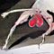 |
3 |
The Birth of Jesus Matthew 1:18-25 |
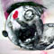 |
4 |
Visit of the Wise Men Matthew 2:1-12 |
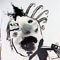 |
5 |
Preaching of John the Baptist Matthew 3:1-12 |
6 |
The Boy Jesus in the Temple Luke 2:41-52 |
|
7 |
The Baptism of Jesus Matthew 3:13-17 |
|
8 |
The Temptations of Jesus Matthew 4:1-11 |
 |
9 |
The Beatitudes Matthew 5:1-12 |
|
10 |
The Sermon on the Mount Matthew 5 to 7 |
11 |
The Lord's Prayer Matthew 6:9-13 |
|
12 |
House on Rock Matthew 7:24-27 |
|
13 |
The New Birth John 3:1-21 |
|
14 |
The Woman at the Well John 4:1-42 |
|
15 |
Fishers of Men Luke 5:1-11 |
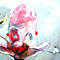 |
16 |
A Roman Captain's Faith Luke 7:1-10 |
|
17 |
Story of the Sower Matthew 13:1-23 |
|
18 |
The Way of Life John 14:1-7 |
|
19 |
The True Vine John 15:1-17 |
|
20 |
The Prodigal Son Luke 15:11-32 |
21 |
Transfiguration of Jesus Matthew 17:1-8 |
|
22 |
Who is the Greatest? Matthew 13:1-23 |
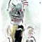 |
23 |
The Rich Young Man Mark 10:17-31 |
|
24 |
Martha and Mary Luke 10:38-42 |
|
25 |
Conversion of Zaachaeus Luke 19:1-10 |
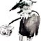 |
26 |
Two Great Commandments Matthew 22:34-40 |
|
27 |
Judgement of the Nations Matthew 25:31-46 |
|
28 |
Mary Annoints Jesus John 12:1-8 |
|
29 |
The Last Supper Matthew 26:17-39 |
|
30 |
Betrayal of Jesus Luke 22:1-6 |
31 |
Jesus Before Pilate Matthew 27:1-26 |
|
32 |
The Death of Jesus Matthew 27:27-50 |
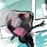 |
33 |
The Resurrection of Jesus Matthew 28:1-10 |
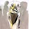 |
34 |
The Risen Christ Appears Luke 24:13-35 |
|
35 |
Jesus Convinces Thomas John 20:24-29 |
36 |
The Great Commission Matthew 28:16-20 |
|
37 |
Birth of the Church Acts 2:37-47 |
|
38 |
The Beautiful Gate Acts 3:1-16 |
|
39 |
Ananias and Saphira Acts 5:1-11 |
|
40 |
Conversion of Saul of Tarsus Acts 9:1-9 |
41 |
Peter Visits Cornelius Acts 10:1-33 |
|
42 |
Peter Rescued from Prison Acts 12:1-19 |
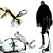 |
43 |
Paul and Barnabus Acts 13:1-13 |
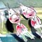 |
44 |
Paul and Silas Luke 24:13-35 |
|
45 |
Paul at Athens Acts 17:16-34 |
46 |
The Plot Against Paul Acts 23:12-35 |
|
47 |
Paul Before Felix Acts 24 |
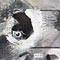 |
48 |
Paul Before King Agrippa Acts 25 to 26:32 |
|
49 |
Shipwreck of Paul Acts 27 |
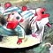 |
50 |
Paul, Prisoner and Preacher in Rome Acts 28:11-31 |
51 |
Christian Duty Romans 12 |
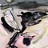 |
52 |
The True Foundation 1 Corinthians 3:10-17 |
|
53 |
The Greatest Gift 1 Corinthians 13 |
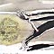 |
54 |
The Promise of Life Acts 27 |
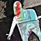 |
55 |
A New World Revelations 21:1-8 |
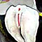 |
| ©2004 Ian Pollock | • back to top • home page |